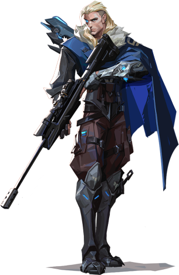

SOVA


Sova nasıl oynanır?
Farklı özelliklere sahip oklarıyla adeta avcı rolünde bir ajan. Oklardan önce bahsedilmesi gereken baykuş dron cihazı ile haritada ufak bir gezintiye çıkmak ve düşmanları işaretleyen iğneler atmak mümkün. Sova’nın patlayıcı özelliğe sahip şok oku atıldığı yerin yakınındaki düşmanlara hasar veriyor, keşif oku saplandığı noktayı gören düşmanları ortaya çıkarıyor, ulti yeteneği avcının hiddeti ise duvarların içinden geçen oklarla düşmanlara hasar verip onların konumlarını görünür kılıyor.
| SALDIRI | SAVUNMA |
|---|---|
| Baykuş Dron | Keşif Oku |
| Şok Oku | Avcının Hiddeti |